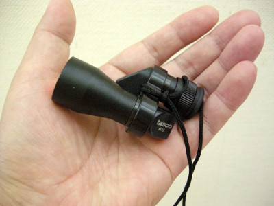

ティップス
便利な小道具 タスコ社製 モノキュラー
釣りをしていると、双眼鏡があったらなぁ.....と思うことがよくあります。
石の上にとまって魚を狙うカワセミ、キャストの届かない淵の中でゆらめく大イワナ、こちらをキョトンとながめるカモシカなどなど。
こんな時に双眼鏡があると、釣り以外の楽しみがとても広がるのですが、いかんせん双眼鏡は重いのが難点です。最も軽量なモデルでも、ベストのポケットに入れるとかなり重く感じます。そうでなくてもいろんな装備で満載のベストにこれ以上重い物は入れたくありません。
そこで、単眼鏡の出番です。各光学機器メーカーからいろんなタイプが出ていますが、私はタスコ社の#516というモデルを使っています。重量は約70グラム、手のひらに入るくらいの大きさで、ベストのポケットにも簡単に入ります。8×20mmという光学特性を持っています。

ただ、水中の魚を探す場合には、どうしても偏光フィルターが欲しくなります。なにかいいアイデアは無いかと考えていたところ、いい物が見つかったので偏光アダプターを自作しました。
材 料
資生堂 ウーノ デュアルエッセンスのキャップ（笑）、もしくは内径24ミリ、長さ15ミリほどのプラスチックパイプ、簡易偏光サングラス「扁眼鏡」＝（株）カヤポーラー製（釣具店で購入）、もしくはカメラ用偏光フィルター
作り方
- 化粧品のキャップをカッターナイフか模型工作用精密ノコギリなどで長さ15ミリほどに切断する。
- 切断面をサンドペーパーできれいに整形する。
- 偏光フィルターをキャップの大きさに合わせて円形にカットする。
- エポキシ接着剤を少量付けて、キャップに偏光フィルターを接着。
- 偏光アダプターを回転させて、偏光効果がある位置を確認する。
これで、水中のイワナの様子をはっきりと見ることができます。なお、転倒・水没に備えて、モノキュラーはビニール袋に入れてからベストの胸のポケットに収めています。
現在では、Amazon で、"tasco 単眼鏡"と検索すると、いくつか売っています。価格も手頃なので、１つ持っていると便利だと思います。色は、黒か迷彩色がお勧めです。
2015/10/21 加筆修正
ティップス 目次へ
サイトマップ
ホームへ
お問い合わせ